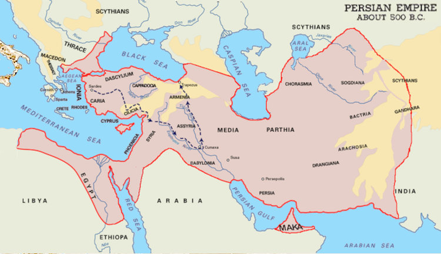

Timeline for the Ancient World

The Persian Achaemenid Empire (550 – 330 BCE)

The Empire under Alexander the Great (330 – 323 BCE)
stretching from Greece to India (followed by Hellenism).
The curious part of all this, is that even though the Persian Achaemenid Empire had already brought together the roots of these western ideas under one rulership, it was only the Greek rule and influx of Greek migrants, starting with Alexander's new cities, which contributed the necessary intellectual and philosophical impetus.
Included here are many of the great thinkers who made contributions to the ancient world. Wherever possible, approximate birth and death times are mentioned, otherwise the time in which they flourished or gained renown.
| BCE = before common era (formerly BC) | |
| CE = common era (formerly AD) | |
| c. = circa/about | |
| fl. = flourished/renowned | |
| KINGDOMS AND EMPIRES | |
| Sumer | c.5500 – c.1800 BCE |
| Akkadian Empire | c.2334 – c.2154 BCE |
| Old Kingdom of Egypt | c.2686 – c.2181 BCE |
| Middle Kingdom of Egypt | c.2055 – c.1650 BCE |
| New Kingdom of Egypt | c.1550 – c.1077 BCE |
| Old Assyrian period | c.2025 – 1364 BCE |
| Middle Assyrian period | c.1363 – 912 BCE |
| Neo-Assyrian period | 911 – 609 BCE |
| Babylonia | 1894 – 539 BCE |
| Chaldean Dynasty | 626 – 539 BCE (also known as Neo-Babylonia) |
| Phoenicia | c.1500 – c.539 BCE |
| Persia | c.678 (unified as a state) |
| Achaemenid Empire | 550 – 330 BCE |
| Alexandrian Empire | 330 – 323 BCE (from Macedon to India) |
| Alexandria (City Founded) | 331 BCE |
| Hellenism | 323 BCE (Alexander's death) – 30 CE (Cleopatra's death) |
| Roman Empire | 27 BCE – 395 CE |
| Visigoth Sacking of Rome | August 24, 410 CE |
| Roman Empire (Western) | 395 – 480 CE |
| Roman Empire (Eastern) | 395 – 1453 CE (Fall of Constantinople) |
| Byzantium | 395 CE – 1453 CE (Fall of Constantinople) |
| Ottoman Empire | 1299 – 1453 (Fall of Constantinople) – 1922 (abolition) |
| SCHOOLS OF THOUGHT | |
| Pre-Socratic | c.585 - c.350 BCE |
| Pythagoreanism | originated in the 6th century BCE |
| Judaism | likely around the 6th/5th century BCE |
| Hermetism | uncertain - probably 5th century BCE |
| Sophism | 2nd half of 5th century BCE |
| Classical | c.350 - c.323 BCE |
| Cynicism | from the late 400s BCE |
| Platonism | c.387 BCE (Platonic Academy) |
| Hellenistic | c.323 - c.31 BCE |
| Pyrrhonism | from after Pyrrho, 4th century BCE |
| Stoicism | late 4th century BCE |
| Neoplatonism | emerged in the 3rd century BCE |
| Gnosticism | late 1st century CE |
| Christianity | 1st century CE |
| THINKERS | |
| Thales of Miletus | c.624 – c.546 BCE (poss. Phoenecian) |
| Pythagoras of Samos | c.570 – c.495 BCE |
| Heraclitus of Ephesus | c.535 – c.475 BCE |
| Empedocles | c.490 – c.430 BCE |
| Herodotus | c.484 – c.425 BCE |
| Plato | c.427 – c.347 BCE |
| Aristotle | c.384 – c.322 BCE |
| Pyrrho | c.360 – c. 270 BCE |
| Zeno of Citium | c.334 – c.262 BCE |
| Manetho | early 3rd century BCE (Sebennytos) |
| Berossos | fl. 290 – 278 BCE (Babylonia) |
| Chrysippus of Soli | c.279 – c.206 BCE |
| Posidonius of Rhodes | c.135 – c.51 BCE (born in Apamea, Syria) |
| Marcus Tullius Cicero | 3 Jan 106 BCE – 7 Dec 43 BCE |
| Seneca the Younger | c.4 BCE – 65 CE |
| Marcus Manilius | fl. 1st century before 14 CE (Astronomica) |
| Dorotheus of Sidon | fl. 1st century Alexandria fl. 25 - 75 |
| Serapio of Alexandria | fl. 1st century Alexandria |
| Plutarch | c.46 – 120 |
| Claudius Ptolemaeus | c.100 – c. 170 Alexandria (Almagest 127, Tetrabiblos 150-170) |
| Vettius Valens | 8 Feb 120 – c.175 Alexandria (Anthologies 152-162) |
| Marcus Aurelius | 26 Apr 121 – 17 Mar 180 (Meditations, 170-180) |
| Sextus Empiricus | c.160 – c.210 |
| Plotinus | c.204/5 – 270 (The Six Enneads, compiled 270) |
| Diogenes Laërtius | fl. 222 – 235 |
| Porphyry | c.234 – c.305 (born in Tyre, Phoenecia/Lebanon) (Isagoge, ed.Enneads) |
| Iamblichus | c.245 – c.325 (born at Chalcis/Qinnasrin in Syria) |
| Zosimos of Panopolis | fl. 300 (born in Panopolis, Roman Egypt) (Cheirokmeta) |
| Firmicus Maternus | c.280 to c.360 fl. 306 to 337 CE (Matheseos) |
| Paulus Alexandrinus | fl. 378 Alexandria (Eisagogika, or Introductory Matters, 378) |
| Augustine of Hippo | 13 Nov 354 – 28 Aug 430 |
| Rhetorius the Egyptian | lived around 505 |
| Muhammad | c.570 - 8 Jun 632 |
| Stephanos of Alexandria | 7th-century Byzantine philosopher |
| Jābir ibn Hayyān | c.721 – c.815 |
| al-Rāzī | c.854(or 864) - 15 Oct 925 |
| Plethon (Georgius Gemistus) | 1355/60 - 1452/4 (reintroduced Neoplatonism to Europe 1438/9) |
| Council of Florence | 1438 – 1439 |
| Marsilio Ficino | 1433 – 1499 |
| Corpus Hermeticum | 1460 (Leonardo de Candia Pistoia) pub. by Ficino 1471 |
| Paracelsus | c.1493/4 - 24 Sep 1541 |
| classical witch hunts | ~1450 - 1750 |
| Auguste Bouché-Leclercq | 30 Jul 1842 Francières Oise – 19 Jul 1923 |
| Julius Ferdinand Ruska | 9 Feb 1867 - 11 Feb 1949 |
| HISTORY OF SPAIN: | |
| Roman Hispania | 218 BCE – 409 CE / 429-439/ |
| Visigoth Hispania | 409/418/484/507/585 |
| Byzantine Spania | 552 – 624 (southern strip) |
| Umayyad Hispania | 711(-719) to 788 |
| Abbasid overthrow of Ummayad caliphate | 750 |
| Muslim Al-Andalus | 711 – 1492 (Moorish name) |
About
Hi, my name is Rod Schneider and I have created this website to illustrate how, with the help of astrology, that negativity can be converted into something more positive. The astrology being shown here is rooted in the most ancient inceptions derived from Hermetism. It is technical but in the hands of a practitioner already familiar with astrology has great potential to be helpful. There is also much help for non-astrologers to use astrology in a different manner, namely with cycles and phases.Comments and contributions are always welcome.
Contact: rodschneider35@gmail.com